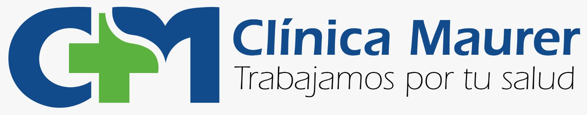

Sistema de gestión técnica
Control integral de equipos médicos
Centraliza el inventario, registra mantenimientos, genera reportes técnicos y organiza los servicios preventivos de la clínica.
InventarioEquipos y fichas técnicas
MantenimientoHistorial y programación
DocumentaciónInformes e impresión PDF
Módulos disponibles